01
O Reel continuou compartilhável
1,7 mil compartilhamentos e taxa de 6,0%, classificada como “Mais alto”, confirmam propensão ao repasse.
Relatório de Performance — 2º mês da parceria entre Orgânico Natural e COUT Group, com comparativo entre ciclos e overview consolidado.
O segundo ciclo somou 72.750 visualizações nos conteúdos da parceria. O Reel manteve sinais qualitativos fortes em curtidas e compartilhamentos; os Stories levaram 1.113 cliques ao destino.
Indicadores de atenção: o volume ficou abaixo do Mês 1 e 70,9% das views do Reel vieram de seguidores. Indicadores de força: 2,4 mil curtidas, 1,7 mil compartilhamentos, 475 salvamentos e 1.113 cliques via Stories.
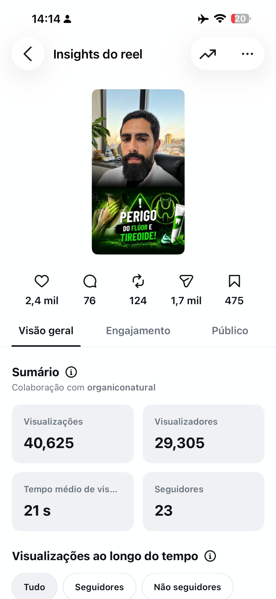
O próprio Instagram marcou compartilhamentos, curtidas e reposts como “Mais alto”. A taxa de pulos também foi classificada como “Mais baixo”, um sinal favorável de retenção inicial.
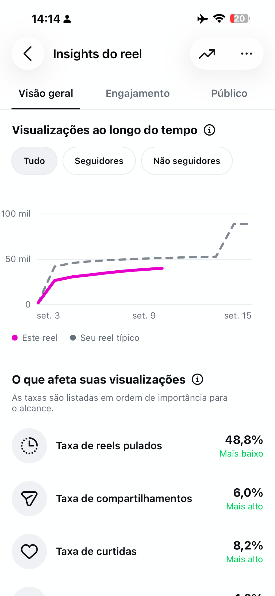
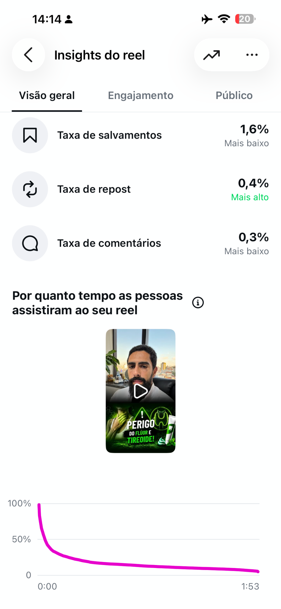
O Feed foi a principal porta de entrada. Com apenas 5,5% somados entre Aba Reels e Explorar, há espaço para ampliar descoberta fora da base.
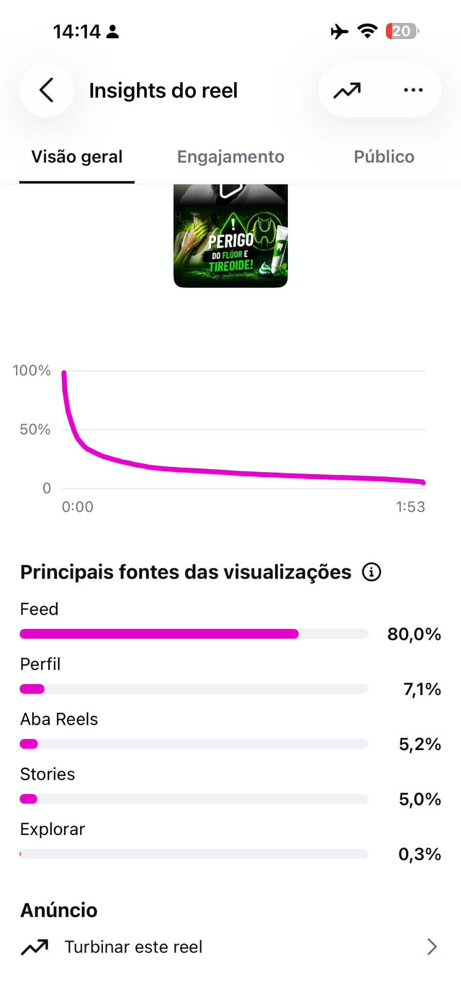
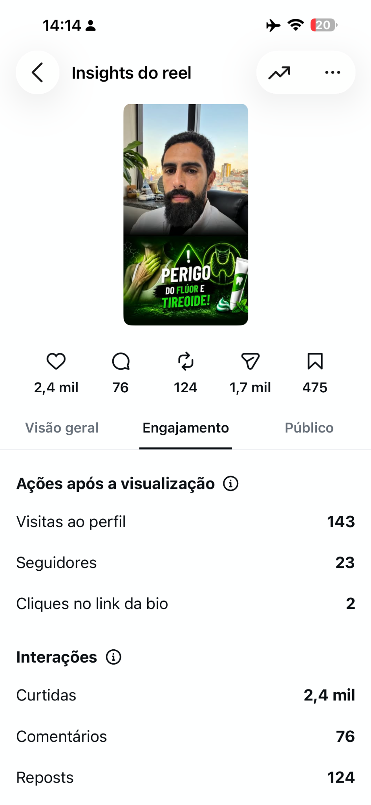
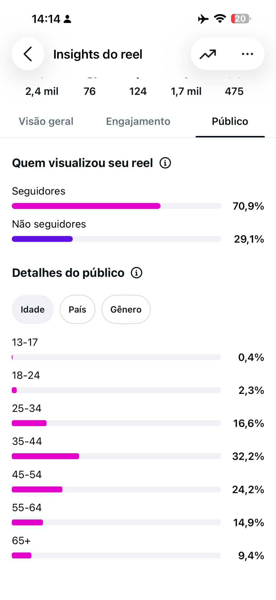
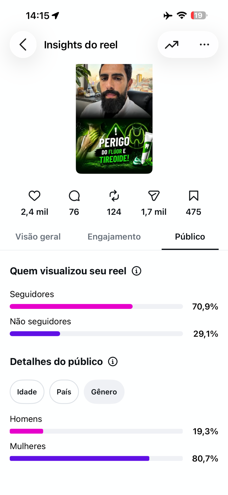
Em uma sequência, 23.006 visualizadores geraram 1.113 cliques no link e 297 toques na figurinha @organiconatural.
1.113 cliques equivalem a 3,5 ações de link a cada 100 visualizações. É uma taxa descritiva sobre views — não uma taxa de pessoas únicas.
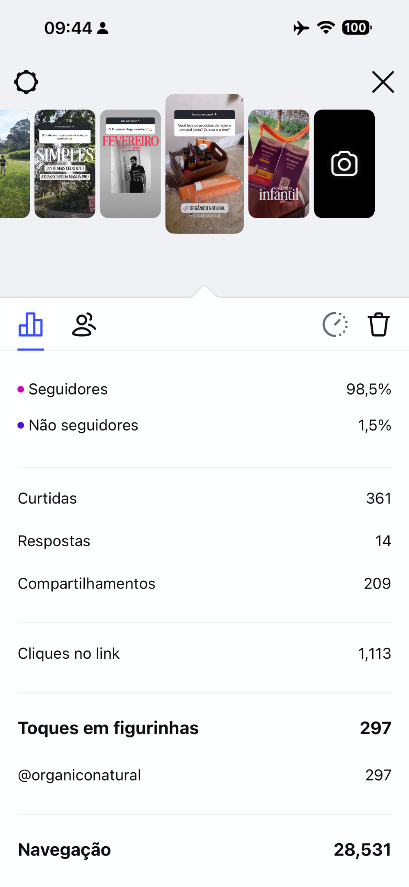
A sequência funcionou sobretudo como ativação da base existente: 97,9% das visualizações vieram de seguidores.
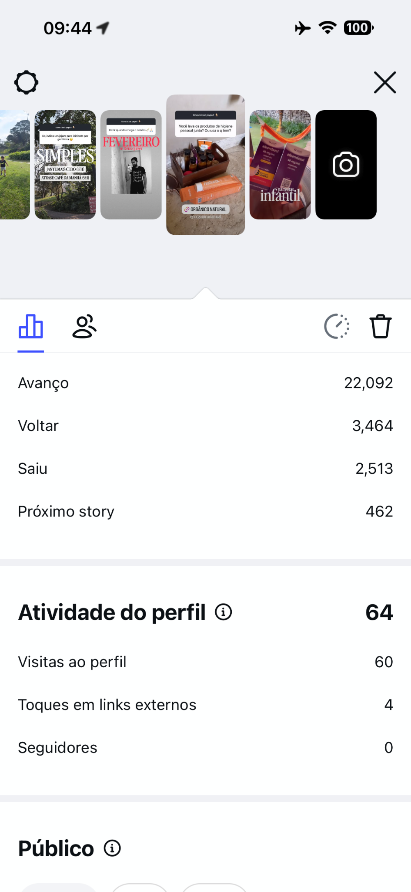
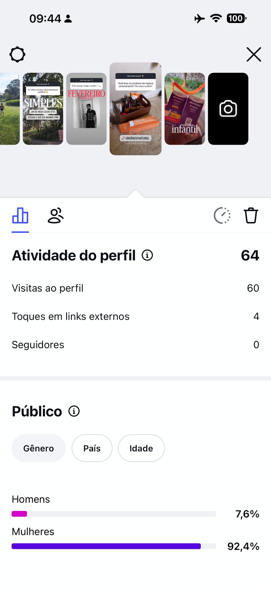
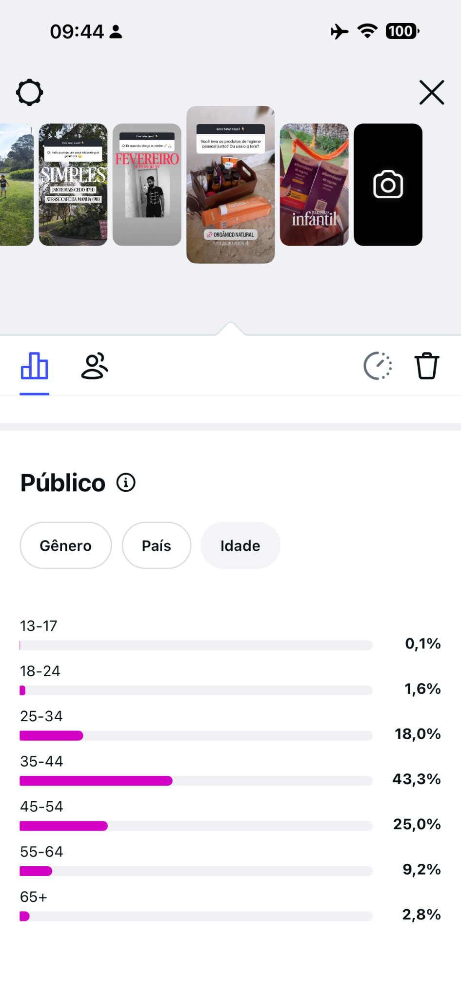
1,7 mil compartilhamentos e taxa de 6,0%, classificada como “Mais alto”, confirmam propensão ao repasse.
70,9% das views do Reel e 97,9% das views dos Stories vieram de seguidores.
1.113 cliques no link e 297 toques em @organiconatural transformaram atenção em ação.
Mulheres foram 80,7% no Reel e 92,4% nos Stories — aderência clara à comunicação.
A faixa representa 56,4% do Reel e 68,3% dos Stories no segundo ciclo.
Brasil responde por 95,3% do Reel e 96,7% dos Stories.
O Mês 1 foi um ponto fora da curva de alcance. No segundo ciclo, os resultados absolutos recuaram, sem apagar sinais de qualidade do conteúdo.
Curtidas e compartilhamentos são exibidos com a precisão fornecida pelo Instagram. As variações marcadas com “≈” usam 15,5 mil, 27,6 mil, 2,4 mil e 1,7 mil como valores aproximados.
Percentuais não foram somados: cada linha compara os dois períodos em pontos percentuais.
Os rótulos “Mais alto” e “Mais baixo” são comparações do Instagram com o histórico do perfil em cada captura; não significam que os dois períodos usaram exatamente o mesmo benchmark.
O Mês 1 teve três sequências; o Mês 2 teve uma. Por isso, o total mensal deve ser lido junto da média por sequência.
| Métrica | Mês 1 · total | Mês 2 · total | Variação total | M1 · média/seq. | M2 · por seq. | Variação normalizada |
|---|---|---|---|---|---|---|
| Visualizações | 108.365 | 32.125 | −70,4% | 36.122 | 32.125 | −11,1% |
| Interações | 2.015 | 584 | −71,0% | 672 | 584 | −13,1% |
| Compartilhamentos | 657 | 209 | −68,2% | 219 | 209 | −4,6% |
| Visitas ao perfil | 361 | 60 | −83,4% | 120 | 60 | −50,1% |
| Cliques no link | 5.697 | 1.113 | −80,5% | 2.849* | 1.113 | −60,9% |
* Para cliques, a média do Mês 1 usa apenas as duas sequências que tinham link: 5.697 ÷ 2 = 2.848,5, exibido como 2.849.
Não foram somados percentuais nem pessoas únicas. Os ≈30,2 mil compartilhamentos combinam formatos diferentes, identificados acima, e usam valores abreviados nos Reels. As 864 mil impressões estimadas de WhatsApp pertencem apenas ao Mês 1 e ficam fora do comparativo por ausência de base equivalente no Mês 2.
Os Reels acumularam aproximadamente 29,3 mil compartilhamentos; nos dois ciclos, a taxa ficou acima do padrão do perfil.
O Mês 2 perdeu volume, mas elevou a taxa de curtidas de 5,1% para 8,2%.
6.810 cliques acumulados, sem misturar os 20 cliques de bio gerados após os Reels.
Mulheres, 35–54 anos e Brasil dominaram os recortes nos dois períodos.
Por sequência, views caíram 11,1% e compartilhamentos 4,6%; o total mensal caiu mais porque houve menos sequências.
Mais distribuição em Aba Reels e Explorar pode recuperar escala sem perder o alinhamento de público.
Conclusão executiva: a parceria provou capacidade de alcance no Mês 1 e manteve sinais de relevância e ação no Mês 2. O próximo ciclo deve combinar a eficiência criativa observada com maior cadência e distribuição fora da base.
17 capturas reais do Instagram. Clique em qualquer imagem para ampliar sem corte.
Mais cadência nos Stories, distribuição do Reel para além da base e rastreamento de cada destino: três decisões objetivas para transformar relevância em escala mensurável.